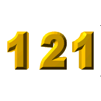

On June 18, 2001 I sent this email to the
47 Society:
Perhaps you are familiar with the reverse-the-digits-&-add activity to achieve palindromes. Well, let's take our beloved and often mystical "47" and see what happens.
47 + 74 = 121 Wow! How lucky can we get? A palindrome on our first try.
And not just any old palindrome either. For starters, it's the smallest palindromic square. Its square root (11) is the smallest non-trivial palindrome of all! [IMHO, the digits 0 - 9 are not terribly interesting as palindromes go.]
And 11 = 4 + 7 to bring us full circle back to 47.
Finally, if we continue with 121 to reverse-and-add, we get
121 + 121 = 242 and 242 + 242 = 484. (484 = 222)
So 47 is the "parent" of three consecutive palindromes, two of which are squares.
3 cheers for 47!
Terry
However, 47 isn't alone in this power. You see, 29, 38, 56, and their reversals behave in the same way, regarding the palindromic reverse-&-add procedure. So there's no real point repeating that work for these integers.
So let's attack the matter from a different aspect: prime factorization! Here are the prime factorizations of all eight integers.
- 29 - prime
- 92 = 2 x 2 x 23
- 38 = 2 x 19
83 - prime
- 47 - prime
74 = 2 x 37
- 56 = 2 x 2 x 2 x 3
- 65 = 5 x 13
|
Of the four pairs, three of them contain one prime each.
The sum of the digits in the factorizations in the "prime-less" pair is the same:
2 + 2 + 2 + 3 = 5 + 1 + 3 = 9.
The prime factorizations of 92 and 56 exhibit a striking similarity: they each contain three 2's and one 3.
Three of the remaining composite numbers have prime factorizations that consist of three distinct digits. Let's examine them a little more in detail now, in fact, in their counting order 38, 65, and 74. In order to do that, we will form the other 5 permutations of the digits.
The digits used in the prime factorization of 38, namely 2, 1, and 9, are arranged in the only possible way for a proper factorization.
- 1 x 29 is invalid as 1 is not prime.
- 1 x 92 is invalid as neither number is a prime.
- 2 x 91 is invalid because 91 is not a prime.
- 9 x 12 is invalid as neither is prime.
- 9 x 21 is invalid as neither is prime.
The digits used in the factorization of 65 {1, 3, 5} consist of the first three odd integers. They yield these other factorizations, only one of which is valid.
- 1 x 35 is invalid as neither is prime.
- 1 x 53 is invalid as 1 is not prime.
- 3 x 15 is invalid as 15 is not prime.
- 3 x 51 is invalid as 51 is not prime.
- 5 x 31 is valid.
The digits used in the factorization of 74 {2, 3, 7} are all primes themselves. And they give us two more proper factorizations:
- 2 x 73 is valid.
- 3 x 27 is invalid as 27 is not prime
- 3 x 72 is invalid as 72 is not prime
- 7 x 23 is valid.
- 7 x 32 is invalid as 32 is not prime.
The number 56 has the unique distinction among all eight values above in that when it is multiplied by 11, a palindrome results: 616.
There are 143 three-digit primes, and exactly 47 of them have the property that the sum of the squares of their digits (SSD) is also a prime. The 11th prime in this list of 47 primes is 311 [note the "11" there] and the SSD is likewise 11, because
32 + 12 + 12 = 9 + 1 + 1 = 11.
We found this item on the website Prime Curios...
11311--- The smallest number that is the sum of twice a positive square and a prime in 53 ways. Note it's also a palindromic prime.
We liked the appearance of "11" on either side of the "3"! Now let's all try to find some of those squares and primes referred to in the comment.
Also, here is something nice that we've adapted from an item (for 643) on the Prime Curio website regarding 3 and 8, whose sum is 11...
38 + 83 is divisible by 11.
That intrigued us enough to check out the other "addition facts" for 11. Here are the results.
110 + 101 = 11.
29 + 92 = 593.
47 + 74 = 18785.
56 + 65 = 23401.
The first result is 11 directly. The 2nd result is a prime. The 3rd result has a prime factorization of 5 x 13 x 172. And the last one consists of five consecutive digits.